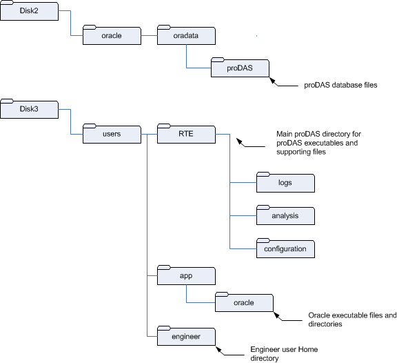
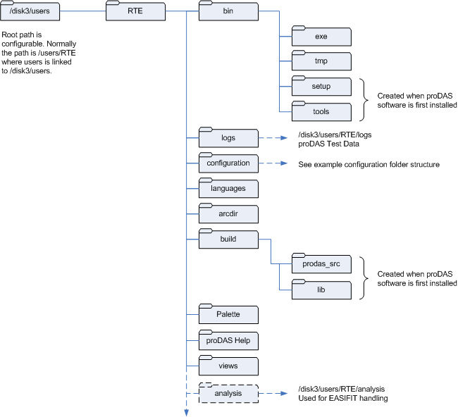
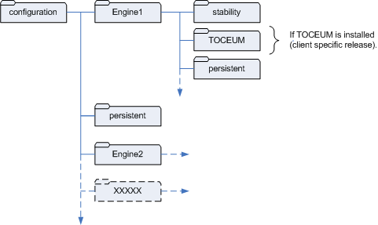
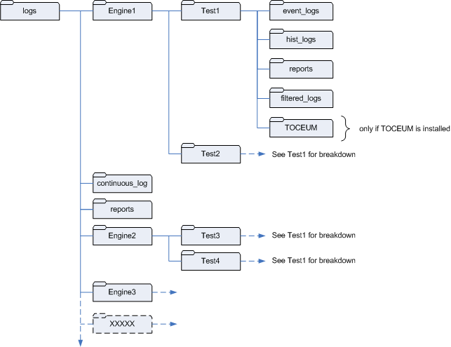

Host Computer
File System Organisation
The Host Computer hard disks are configured with three basic partitions, including:
- the root partition for the operating system files
- the /disk2 partition for the Test Results and Sensor Calibration Database (TRSCDB)
- the /disk3 partition for engineer user, proDAS executable and supporting files, oracle executable files, Transient Log and other result data
The following figure illustrates the location of the primary TRSCDB database files on the Host Computer.
Primary TRSCDB Database Files on the Host Computer

The following figures illustrate the location of the proDAS files and result data on the Host Computer.
Main proDAS Directory Structure

Configuration Folder Structure

Results Folder Structure
